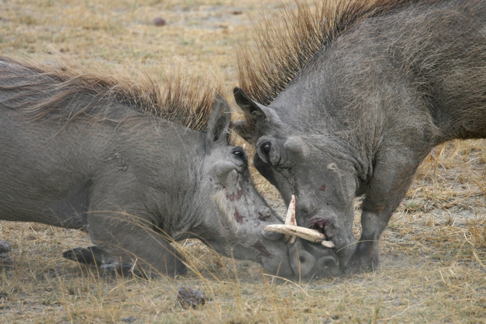

Warthogs have prominent warts on their faces as their name suggests, the warts on their faces are cartilaginous and protect their faces and eyes during fights and can gow up to 6 in in length in males they also have large upper tusks that are 10-24 in long in males and 6-10 in on the females the males use their tusks for fighting and defending themselfs, the female warthogs use them for defence.
